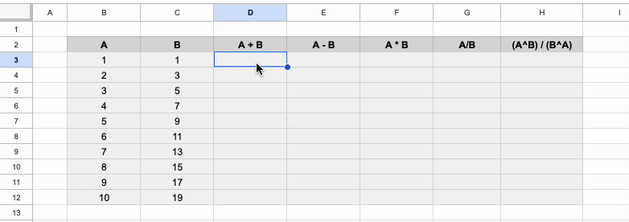
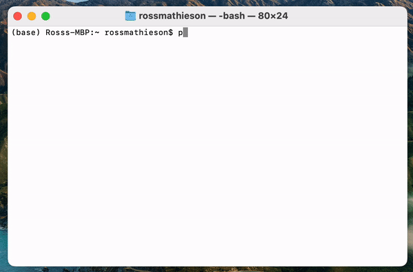
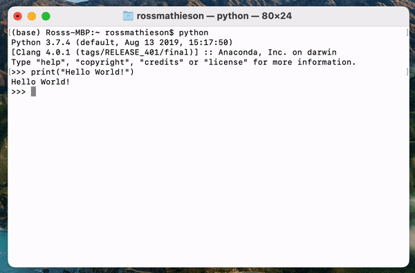
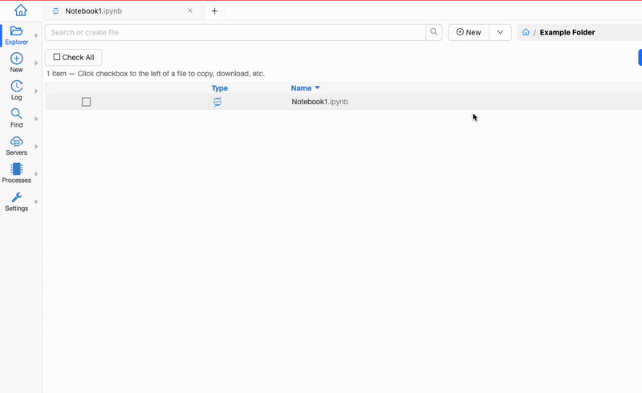

Performing Calculations with Computers I#
Learning Objectives:#
To understand why computers are useful tools for performing calculations and analysis.
To be able to use various different computing tools to perform calculations.
To become familiar with Python environments.
To be able to apply computing skills to solve physics related problems.
Overview#
As scientists it is important that we are able to use appropriate computing tools in our work. Computers allow us to perform correct and efficient data analysis, to create plots to help us better visualise information, provide a means of controlling equipment used in experimentation and allow us to simulate physical systems so that we may make cogent predictions in real world situations. Of course our use of computers is not limited to these sorts of activities, but these are solid examples of the sorts of tasks you will come across in your career as a Physicist.
Each of the example tasks mentioned above could be performed using traditional means, for example using hand-written calculations and building scale models, but there are clear disadvantages of taking these approaches:
Humans are prone to making mistakes - it would be easy to copy the number 3.4456123 from our calculator as 3.4456213 without realising our mistake, perhaps we accidentally drop a minus sign or neglect a set of brackets in a complex formula…
Humans are slow - I am sure that if I asked you to perform 1000 sequential calculations as part of a data analysis project you would be able to do so, but this would take up a lot of your time, time that could be better spent working on something else. Furthermore, how would you feel if I told you that a variable used in the 2nd calculation needed changing and all of the work needed repeating?
Humans do not enjoy laborious and repetitive tasks - You probably wouldn’t be too impressed with me if I assigned a homework task that asked you to do the same exercise 1,000,000 times…
In contrast to humans, a computer will not accidentally make calculation mistakes, they can perform certain tasks in a fraction of the time it would take us to complete them and they are quite happy to iterate and repeat processes an undefined number of times. It is clear why it is advantageous to learn how to effectively use computational tools and integrate them into our workflow.
In this session (and throughout the semester) you are going to be introduced to various computational tools and techniques that you will use throughout your studies. Investing in these skills early in your academic career is of the utmost importance as they will form the basis for the remainder of your degree programme.
Computers as Calculators#
As an exercise to get to grips with a few of the different computing tools we can use to perform calculations, we will complete a series of exercises using three different tools: Google Sheets, the Python Interpreter and a Jupyter Notebook.
The exercises to complete this session are provided following the overview of the tools you will be using.
Google Sheets#
Google sheets is an online spreadsheet program (like Microsoft Excel) that can be used to efficiently perform calculations and visualise trends in the form of graphs. Numbers can be directly entered into cells and calculations can be performed using these numbers by writing a formula that references the cell. When performing a calculation in a cell, you must begin the formula with an equals sign. An advantage of using a spreadsheet is that you only need to type a formula once to perform many calculations.
An example of the way we can perform calculations is provided in the GIF below:
Built into Google Sheets are many pre-made functions that can perform calculations for you, for example, you can calculate the average of a set of numbers using the =average() function. You can search for any of the functions you may need here. The documentation tells you what a function does and even provides examples of how to use them if you are unsure.
If you would like to use one value in many calculations, in your formula you can reference the same fixed cell by putting a dollar sign before the cell letter and then another before the cells number when writing your formula.
The Python Interpreter#
One of the skills that you will learn over the course of this block is how to use Python. Python is a high-level programming language that can be used in web development, task automation, data analysis and visualisation, and many more activities. It is a widely used language in science as it is freely available, open source and very flexible in the way that it can be used.
The Python interpreter is a tool that reads the code we write in Python and executes it for us. We can write commands directly into the interpreter and this is very useful when we would like to perform simple calculations. We will use more sophisticated tools when running more complex Python codes.
To open the Python interpreter we need to ensure that Python is installed on the computer that we are using (all of the computers in the lab should have Python installed already). The easiest way to do this is to open the terminal, type “python” and press enter. If Python is installed the version number will appear and the interpreter will open. From this point we can type commands after “>>>”, for example, in the GIF you will see me use the print() command.

If you would like to install Python onto your own computer, the easiest way to do this is by downloading Anaconda. Installation is simple and once complete you will have access to Python from your computer’s terminal or by opening Anaconda. Within Anaconda you can use many other Python based programs such as SpyderIDE or Jupyter Notebooks etc.
Once we have opened the interpreter we can start to type in basic python commands or return the answers to basic calculations. The mathematical operations are similar those used in Google Sheets (add is “+”, and divide is “/” etc.), however there are some differences, for example, to raise something to the power in Python we use “**” rather than “^”.
A few examples of the basic calculations you may wish to perform using the interpreter are shown in the GIF below. Spend some time becoming familiar with the interpreter - perform some basic calculations, look at any error messages that it outputs and try to understand what they mean etc.

In many cases we want to save information to be used later. This can be achieved using a variable (more on this next week). You may assign a variable a value in the interpreter by typing the name of the variable and setting it equal to its value (e.g. >>> A = 6). This can now be used in calculations. We can reassign the value of the variable at any time by simply setting it equal to another value - give this a go! Type the following into your interpreter (without the #’s) and see what happens.
# A = 6
# A
# A * 5
# A = 7
# A
# A = A + 1
# A
Jupyter Notebooks#
There are lots of ways we can get a computer to read and execute the Python code we write, but a great tool to use is the Jupyter Notebook. One of the key advantages of using a Jupyter notebook is that we can execute blocks of code and see the output before running another block. Additionally, the notebook can be interlaced with text and equations in a clear way that does not interfere with our code. This makes it easier to understand what our code is doing or how it is related to the topic we are covering. These notebooks will form the basis of how Python is taught in these workshops.
Although we can save Jupyter notebooks locally on our computer (included in Anaconda), we can also use them in the cloud using CoCalc. Cocalc is an online tool that will be used to share the notebooks used in these sessions and where you are free to do your work.
To create a new notebook, simply log on to Cocalc, open a project, press the “new” button in the CoCalc toolbar, enter the name of your new file and select notebook, then confirm that you would like it to interpret Python. Once you have created your notebook, you can enter code into a cell and execute it by pressing “run” in the toolbar. The output will be shown directly below the cell.

Spend some time familiarising yourself with this new coding environment. Perform some calculations and run the cells and see what they output. Try to get into the habit of organising different sections of your code in different cells - tidy code is much easier to read and debug, and by splitting sections of code into different cells you will be able to quickly identify where your code may be breaking. Important note: the computer will read and execute your code line by line in order - ensure that any terms used are defined before they are called.
Activities#
The following activities have been designed for you to get to grips with the different tools discussed above. The problems provided are related to the content you have coveed in your mechanics lecture this week.
Google Sheets#
A projectile is launched with an initial velocity of \(17.05 \,ms^{-1}\) at an angle of \(63\) degrees relative to the horizontal plane. The projectile follows a parabolic path according to:
Determine the maximum vertical height reached by the projectile using SUVAT.
Determine the maximum horizontal distance the projectile travels.
Use the projectile equation to determine the height of the projectile as a function of the horizontal distance travelled by the projectile up to the maximum horizontal distance travelled (to the nearest m). Start at a horizontal displacement of \(0\,m\) and increase in increments of \(1\,m\).
Plot the height of the projectile as a function of the horizontal distance travelled.
Hints: Google Sheets requires angles to be in radians. For part 4, the easiest way to do this in Google Sheets is to highlight your x and y data and select the “insert chart” icon from the toolbar.
Python Interpreter#
A cannonball is launched directly upwards with an initial velocity of \(45 \, ms^{-1}\). Acceleration due to gravity is equal to \(9.81\, ms^{-2}\). Using the SUVAT equations:
Calculate the velocity of the cannon ball \(4\) seconds after launch.
Calculate the maximum height that the cannonball reaches.
Calculate the time it takes for the cannon ball to hit the ground.
Acceleration due to gravity on Mars is \(3.71 \, ms^{-1}\).
The cannon appears on Mars for some reason. Repeat the calculations for (1) & (2).
Hint: Pressing the up arrow key shows the previous things typed into the interpreter, you can then navigate through the text using the left and right arrow keys to edit the calculations.
Jupyter Notebook#
This time a projectile is launched with an initial velocity of \(120 \, ms^{-1}\) at an angle of \(47\) degrees relative to the horizontal plane of a platform 11 m above the ground. Once again:
Determine the maximum vertical height reached by the projectile (relative to the ground).
Calculate the maximum horizontal distance that the projectile travels.
Use the projectile equation to determine the height of the projectile as a function of the horizontal distance travelled by the projectile (use 5 horizontal distances \(x = 200\,m, 500\,m, 800\,m, 1100\,m\) and \(1400\,m\))
Note: use np.tan() and np.cos() in the Jupyter notebook where necessary and again use radians - more on this later!